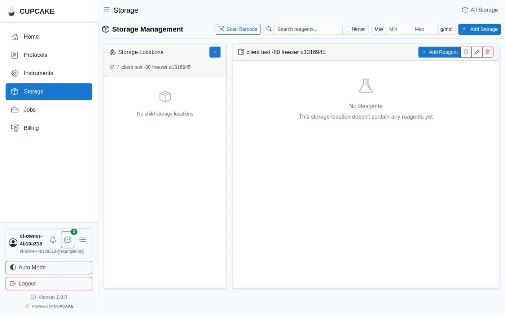

Storage Management shows storage locations as a tree, such as rooms, freezers, racks and boxes, and the reagents kept in each.

Locations
Add Storage adds a location, inside the selected one when one is selected. Manage Access chooses the lab groups that can use a location.
Reagents
Add Reagent adds a reagent to the selected location with its quantity, unit, molecular weight, expiry date and notes. Notify on low stock sends a notification when its quantity falls below the threshold.
Each reagent's actions:
- Add Quantity and Reserve Quantity record what is added and taken; Usage Journal lists every change.
- Documents keeps its safety data sheets, certificates and other files.
- Manage Metadata describes it with SDRF fields.
- Copy Share Link copies a link to it, and its access settings share it with lab groups, users or everyone.
Search reagents finds reagents by name, optionally in nested locations and by molecular weight. Scan Barcode finds them with the camera.